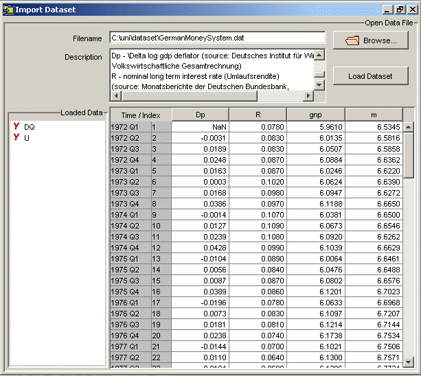

Data import is denoted with the symbol . It is
accessible from the toolbar and from the FILE menu.
Alternatively, one can use drag and drop to import data files
conveniently. Data import is different from opening
projects.
Except for the JMulTi DAT format, the user must specify
the start date for the data to be imported. Afterwards,
the data import dialog displays the data to be loaded.
Only after the LOAD DATASET button is pressed the
variables are available for analysis.

In general it is neither necessary nor recommended to
read in deterministic series that are either a
trend, an intercept or seasonal
dummies. JMulTi provides selection mechanisms to
add these terms to your model. It is meaningful to read
in every other kind of deterministic variables, like
dummies.
The description is optional. The
file should contain the data of each variable in a
column. When the file is opened, a dialog
will appear. It is possible to add a
description of the dataset by putting /*
description... */ somewhere in the file. The
description can be displayed in JMulTi.
JMulTi DAT Format Version 2
(The format of the start date specification has
changed in comparison to DAT version 1, but older
versions are still supported. However, the use of version
2 is encouraged.)
JMulTi has a format that allows you to read in
datasets without being asked for any additional
information. It is a slight extension of the pure ASCII
format described in the previous section. The start date
must be a valid date specification enclosed in < >,
see dates. Variable names should
appear over the columns with the data. The example data
files that come with JMulTi are in the DAT format.
Excel Format
JMulTi can read in files in the Excel 97/2000 Format.
There is an appropriate file filter for
*.xls files. When the file is opened then
there appears a dialog . The Excel file reader recognizes the first
entries in each column as variable names. If there are
no variable names or only numbers, it creates variable
names from an index. It then starts reading in the
values of all columns from the 1st row with a
recognized number. It finishes reading in the last row
with a recognized number.
Every value that is not a number will be coded as NaN.
The easiest way is to provide an Excel file with the
variable names in the first row and the values starting
in one of the next rows. Cells with formulas are
interpreted as well.
Gauss .fmt Format
The binary matrix file format used by the Gauss
software (www.aptech.com) can be imported to JMulTi. It
is described in the Gauss User's Guide. Only numerical
data is read. All versions are supported.
Gauss .dat Format
The binary dataset file format used by the Gauss software
(www.aptech.com) can be imported to JMulTi. It is
described in the Gauss User's Guide. Variable names are
correctly interpreted. Only numerical data is
read. All versions are supported.
Matlab .mat Format
The binary .mat file format level 5 used
by the Matlab software (www.mathworks.com) can be
imported to JMulTi. It is described in the
specification document "MAT-File Format Version 7".
Only numerical data is read up to 2-dimensional
arrays. Higher-dimensional arrays and all other data is
ignored. Variable names are correctly interpreted.
Level 4 .mat files are not supported.